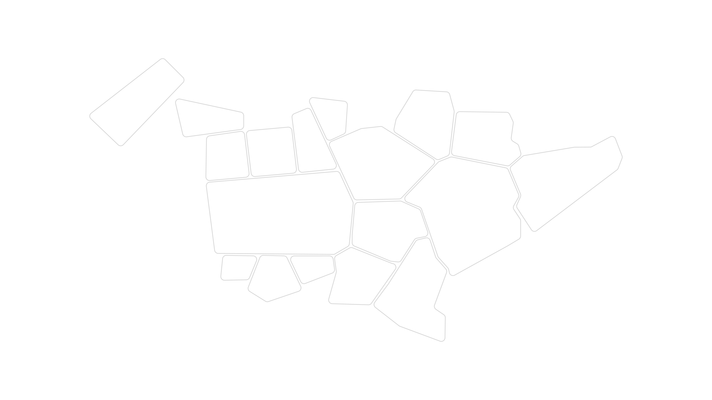

📍
📍

Explore autrement le tissu entrepreneurial de ta région
Secteurs
▾
Food & Gastronomie
Industrie/Machine
Commerce/service
Tech/Innovation
Agriculture/Artisanat
Créatif & culture
Taille de l’entreprise
▾
Indépendant
PME
Grande entreprise
Plot twist
Affaire de famille
Boss ladies
Surprise me
Jobs pas comme les autres